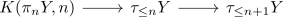
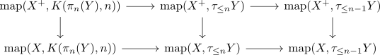

hypoabelianization adjunction on anima
Proposition
The quillen plus construction forms an left adjoint to the inclusion
\begin{align*}
\mathrm{An}^{\mathrm{Hypo}} \hookrightarrow \mathrm{An}
\end{align*}
Proof
using pointwise construction of an infinity adjunction we need to show that for $Y \in \mathrm{An}^{\mathrm{hypo}}$
\begin{align*}
\mathrm{map}(X^+,Y) \rightarrow \mathrm{map}(X,Y)
\end{align*}
is an equivalence
Since $X \rightarrow X^+$ is $\pi_0(-)$ bijective we may assume that $Y'$ is connected anima.
Now consider the postnikov tower of an anima $\{\tau_{\leq n} Y\}_{n \geq 0}$ and limit of postnikov tower equivalent of anima
base case
then $\tau_{\leq 1} Y = BG$ for $G$ a hypoabelian group.
Then
\begin{align*}
\mathrm{map}(X^+, BG) \rightarrow \mathrm{map}(X^+,
\end{align*}
inductive step
consider the fiber sequence

to get
